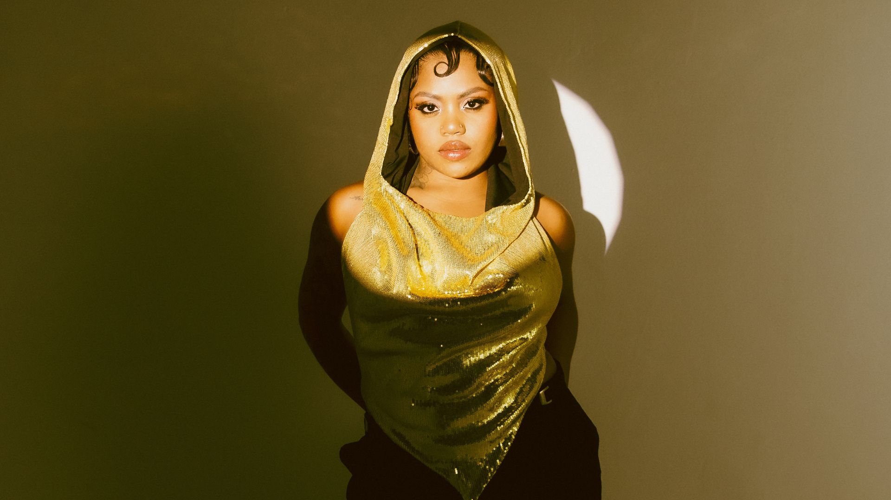
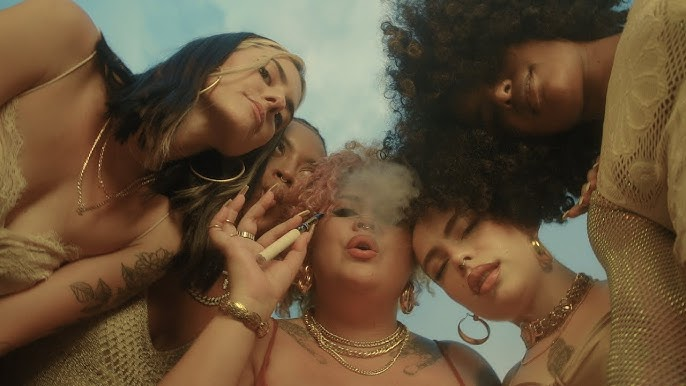

A cena do rap feminino vem crescendo cada vez mais. Então, escolha uma rapper para saber algumas curiosidades sobre ela!
Boa escolha! Você sabia que Duquesa nasceu em Feira de Santana, Bahia
Mac Julia nasceu em Belo Horizonte, Minas Gerais.
seu nome verdadeiro é Jeysa Ribeiro Conceição.

Duquesa, atualmente é uma das maiores rappers femininas da cena!
Dona dos hits: Se tá Solteira, Faixa Rosa e Sofá, Breja e Netflix
seu segundo vulgo é: Dona Onça
Ela começou sua carreira musical em 2015
Ela tem dois filhos e, é casada!
atualmente, ela namora
atualmente ela namora

Ela é a melhpor no que faz!
ela tem 1,59m